Formation de qualité
Des enseignements assurés par des enseignants-chercheurs qualifiés.
Le parcours STA offre une formation scientifique solide permettant d'acquérir des compétences en mathématiques, informatique, physique et sciences de la mer.
Des enseignements assurés par des enseignants-chercheurs qualifiés.
Des formations adaptées aux besoins du marché de l'emploi.
Une ouverture vers les laboratoires et la recherche scientifique.
Cette filière a pour objectif de permettre aux étudiants d’acquérir des connaissances fondamentales, de développer des compétences analytiques et de résolution de problèmes, d’explorer les intersections interdisciplinaires et de préparer aux spécialisations et à la recherche scientifique.
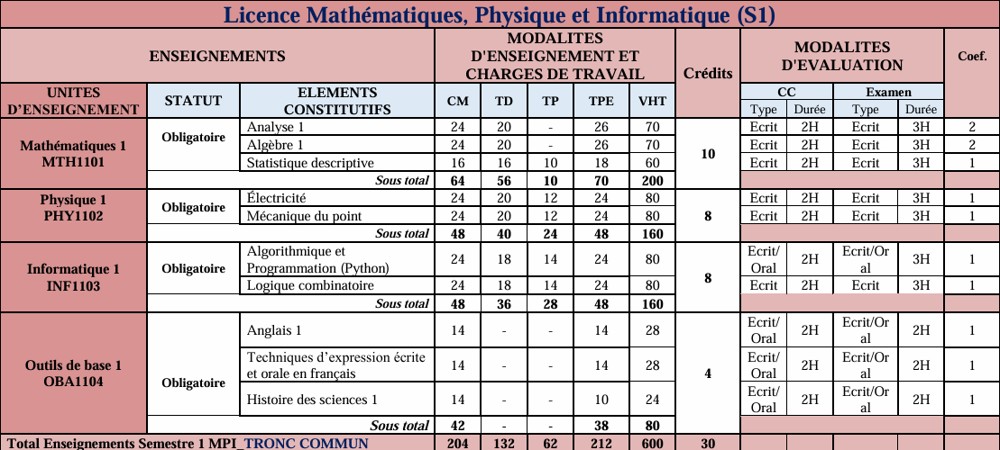
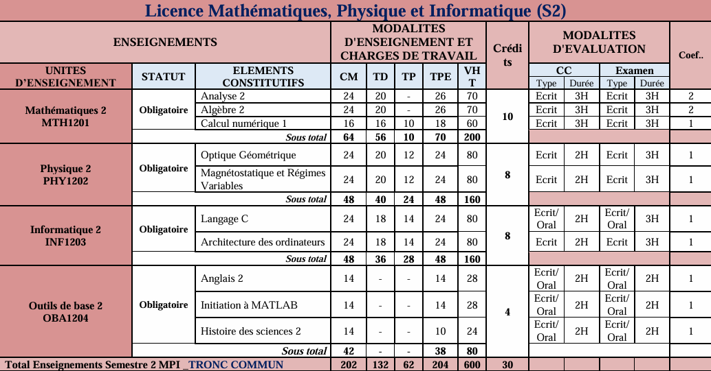
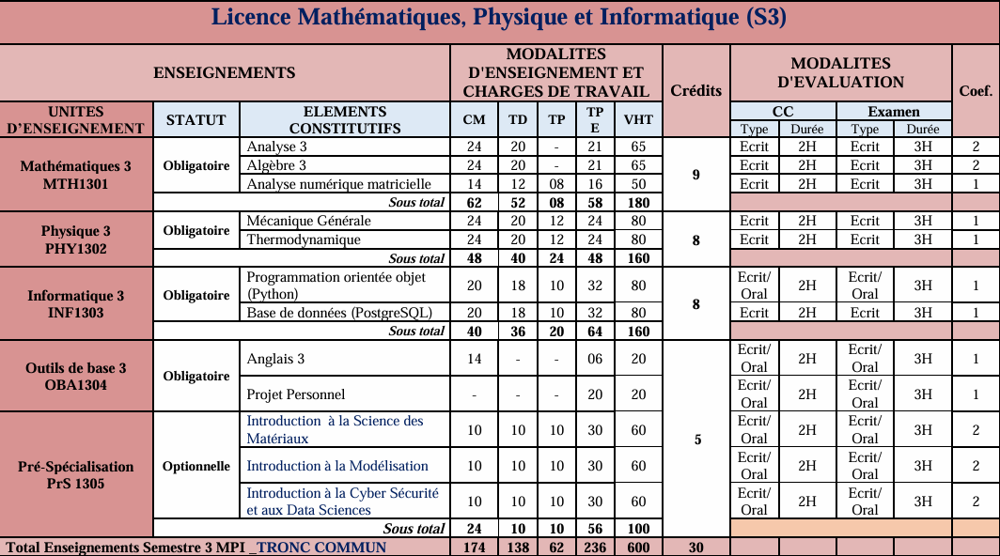
| UE | EC | Crédits |
|---|---|---|
| Mathématiques |
Analyse 4 Algèbre 4 Probabilités |
9 |
| Physique |
Mécanique Quantique Électro-Relativité |
8 |
| Informatique |
Système d'Exploitation Algorithmes Avancés Datascience et IA |
8 |
| Analyse du Signal |
Outils Mathématiques pour le Signal Traitement du Signal et Image |
3 |
| Outils de Bases |
Anglais 4 Projet Personnel |
2 |
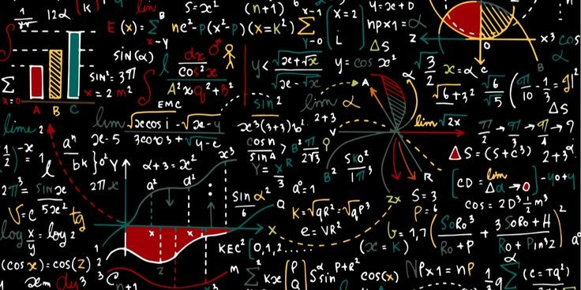
La filière Mathématiques et Modélisation (MM) forme des étudiants à l'analyse, à la modélisation et à la résolution de problèmes complexes. Elle prépare aux métiers de la modélisation mathématique, de la recherche, de la finance, de la science des données, de l'optimisation et de la simulation numérique.
| UE | EC | Crédits |
|---|---|---|
| Mathématiques 5.1 |
Analyse 5 Variables Complexes Statistique Inférentielle |
- |
| Mathématiques 5.2 |
Solveurs Numériques 1 (EDO) Recherche Opérationnelle Mesure et Intégration |
- |
| Informatique 5 |
Bases de Données et Visualisation Calculs Intensifs |
- |
| Humanités |
Anglais Technique Leadership et Développement Personnel Techniques de Rédaction Scientifique |
- |
| UE | EC | Crédits |
|---|---|---|
| Mathématiques 6.1 |
Introduction aux EDP Optimisation non linéaire Calcul Différentiel |
- |
| Mathématiques 6.2 |
Solveurs Numériques 2 Modélisation des Données Introduction au Calcul Parallèle |
- |
| Informatique 6 |
IoT et IA Outils Informatiques |
- |
| Projet de Fin d'Études | Projets Tutorés | - |
La filière Informatique Appliquée (IA) forme des spécialistes capables de concevoir, développer et administrer des solutions informatiques répondant aux besoins des entreprises et des organisations. Elle prépare aux métiers du développement logiciel, des bases de données, des réseaux, de la cybersécurité, de l’intelligence artificielle et de la science des données.
| UE | EC | Crédits |
|---|---|---|
| Informatique 5.2 |
Programmation Java Avancée Programmation Data Science Programmation Web |
- |
| Informatique 5.3 |
Internet des Objets (IoT) Introduction aux Réseaux |
- |
| Informatique 5.4 |
Génie Logiciel SI et Modélisation UML |
- |
| Mathématiques 5.1 |
Analyse de données Recherche Opérationnelle |
- |
| Humanités |
Anglais Technique Leadership et Développement Personnel Techniques de Rédaction Scientifique |
- |
| UE | EC | Crédits |
|---|---|---|
| Informatique 6.1 |
Introduction aux Routage Sécurité du Système Informatique et Réseaux |
- |
| Informatique 6.2 |
Virtualisation/Cloud Services Réseaux |
- |
| Informatique 6.3 |
Développement d'applications mobiles JavaScript et Framework |
- |
| Informatique 6.4 |
Big Data Deep Learning |
8 |
| Projets de Fin d'Études | Projets Tutorés | - |
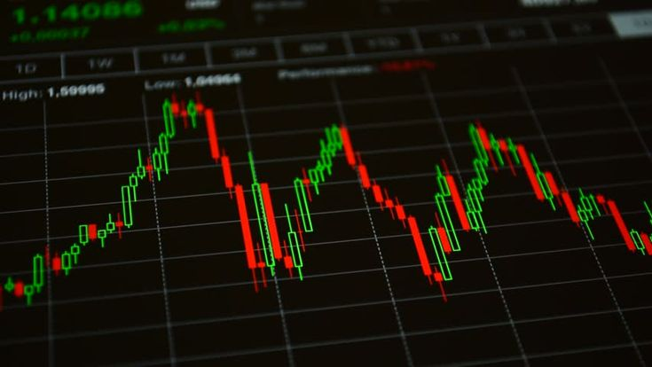
Cette filière forme des professionnels capables de travailler dans les compagnies d’assurances, les cabinets d’études de prévision et de conseil, le commerce, le marketing, le management des projets, le management des entreprises, la finance, la gestion, la comptabilité, la gestion industrielle, la logistique et la qualité, l’enseignement et la recherche.
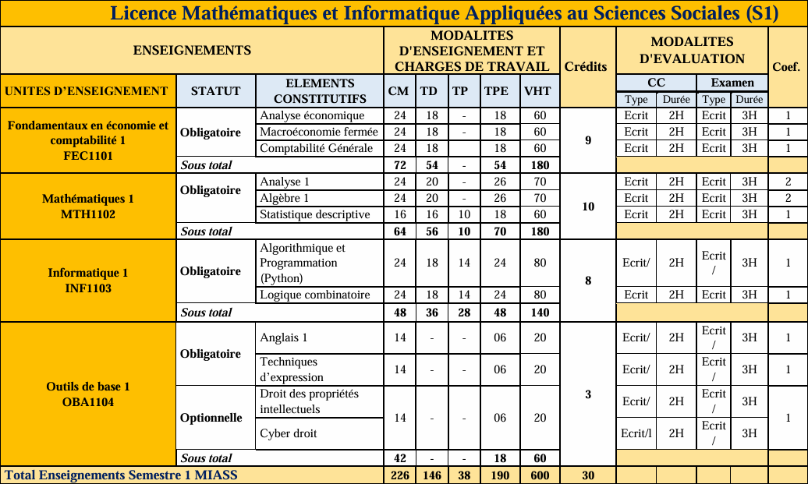
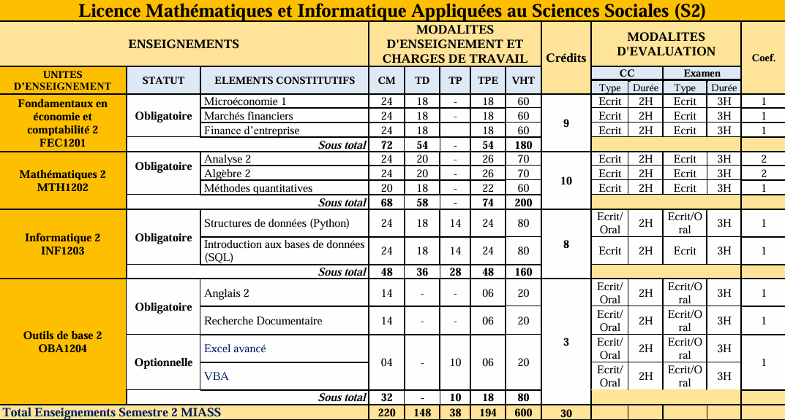
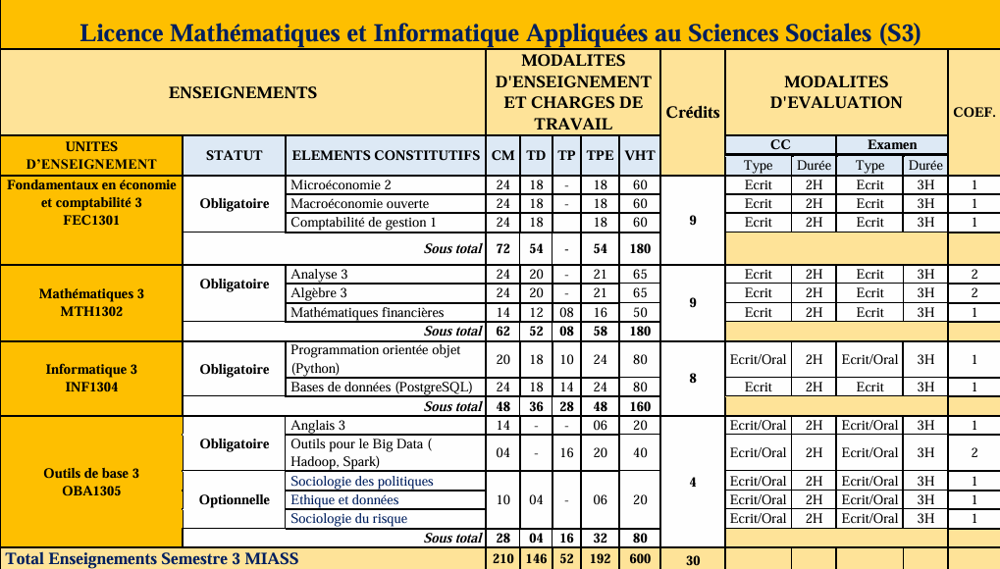
Cette filière forme des spécialistes de la gestion et de l’aménagement des espaces côtiers et maritimes, avec des compétences en génie côtier, génie portuaire, ressources marines et économie bleue.
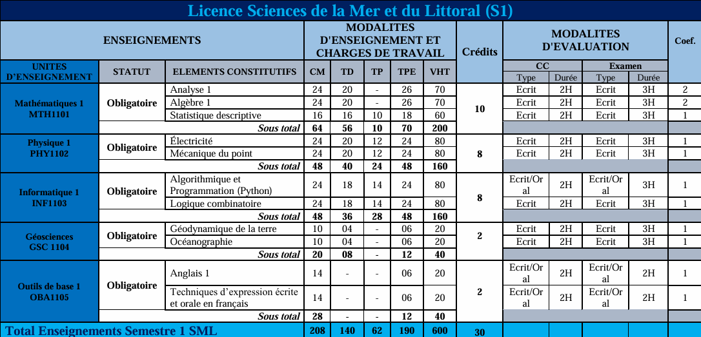
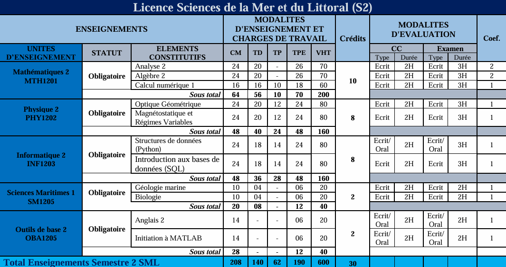
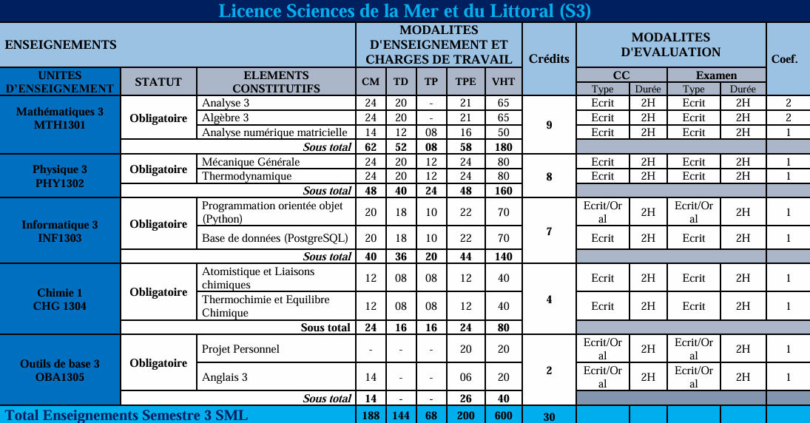
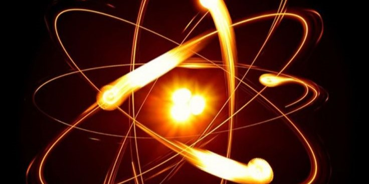
La filière Physique et Applications (PA) forme des étudiants aux métiers de la physique et de ses applications. Le tronc commun (S1 à S4) est partagé avec la filière MPI, puis, à partir du S5, la formation est assurée par le département Sciences de la Matière et de l’Univers (SMU).
Elle prépare des compétences répondant aux besoins du développement durable, notamment dans les domaines des matériaux, des énergies, de l’eau et du spatial.
| UE | EC | Crédits |
|---|---|---|
| Physique 5.2 |
Physique Quantique 1 Electromgnétisme |
- |
| Mathématiques 5 |
Mathématiques pour la Physique Méthode Numérique 1 |
- |
| Chimie Générale |
Atomistique et Liaisons chimiques Thermochimie |
- |
| Humanités |
Anglais Technique Leadership et Développement Personnel Techniques de Rédaction Scientifique |
- |
| UE | EC | Crédits |
|---|---|---|
| Physique 6.1 |
Mécanique des Fluides Mécaniques des milieux continus |
- |
| Physique 6.2 |
Optique Physique Optique Cristalline |
- |
| Chimie de la matière |
Chimie inorganique Chimie organique |
- |
| Mathématiques 6 |
Mathématiques pour la Physique 2 Méthode Numérique 2 |
- |
| Electronique |
Electronique Analogique Electronique Numérique |
- |
| Projets de Fin de Cycle | Projet | - |
Recherche, enseignement, finance, actuariat, modélisation, optimisation, statistiques et aide à la décision.
Recherche et développement, énergie, matériaux, industrie, eau, spatial, instrumentation et ingénierie.
Développement logiciel, intelligence artificielle, cybersécurité, réseaux, cloud, IoT, data science et administration systèmes.
Environnement marin, aquaculture, pêche, génie maritime, gestion du littoral, ONG et organismes publics.
Analyse de données, économie, finance, statistique, aide à la décision, administrations, banques et cabinets d'études.
Le cycle de Master, qui privilégie le modèle de Master inter-universitaire, sera ouvert avec des filières innovantes (Master professionnel et/ou professionnalisant et Master Recherche).
Une formation scientifique complète ouvrant la voie aux études supérieures et à de nombreux métiers scientifiques.
Pour toute information complémentaire, contactez le secrétariat de l'UFR STA.
Nous contacter